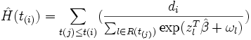
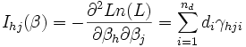

Angenommen  . Es wird angenommen, dass die Ausfall- und Zensierungsmechanismen
unabhängig voneinander sind. Die Hazardfunktion,
. Es wird angenommen, dass die Ausfall- und Zensierungsmechanismen
unabhängig voneinander sind. Die Hazardfunktion,
wobei ein Vektor unbekannter Parameter und eindeutige Ausfallzeiten angeben, t(1) < t(2) < ? < t(nd) , so dass ausfallen, folgt, dass die marginale Likelihood für gut approximiert wird durch:
Änn Strata variiert, wobei die Anzahl der Individuen im k-ten Stratum  , mit
, mit /7206eb01b8f22ed0256b5e111099ce5e.png) zu erhalten:
zu erhalten:
der Anteil der Likelihood für die  .
.
Die Überlebensfunktion mit Basisline, die mit einer Ausfallzeit ,
wobei  ist die Anzahl der Ausfallzeiten bei
wobei (Logarithmus der marginalen Likelihood). Es gibt zwei Möglichkeiten, um zu testen, ob individuelle Kovariate signifikant sind: Die Differenzen zwischen den Abweichungen der geschachtelten Modelle können mit der entsprechenden ![L=\prod_{i=1}^{n_d}\frac{\exp (s_i^{T}\beta +\omega _i)}{[\sum_{l\in R(t_{(1)})}\exp (z_i^{T}\beta +\omega _i)]^{d_{i}}}](../images/Algorithm_(phm_cox)/cc16c6f24fb58b700e403bda5a25280f.png) die Summe der Kovariate des Ausfalls von beobachteten Individuen bei der Satz von risikoreichen Individuen vor überlebenden Individuen. Die MLE (Schätzungen der maximalen Wahrscheinlichkeit) von , erhält man durch die Maximierung (1) mit einer Newton-Raphson-Iterationstechnik, die Stufen enthält und die erste und zweite partielle Ableitung von (1) verwendet, die gegeben sind durch (2) und (3) unten:
die Summe der Kovariate des Ausfalls von beobachteten Individuen bei der Satz von risikoreichen Individuen vor überlebenden Individuen. Die MLE (Schätzungen der maximalen Wahrscheinlichkeit) von , erhält man durch die Maximierung (1) mit einer Newton-Raphson-Iterationstechnik, die Stufen enthält und die erste und zweite partielle Ableitung von (1) verwendet, die gegeben sind durch (2) und (3) unten:
das j-te Element in dem Vektor hlich ist
 h, j = 1, ? p
 des (h, j) Elements der beobachteten Informationsmatrix die Varianz-Kovarianzmatrix von unendlich sind.
des (h, j) Elements der beobachteten Informationsmatrix die Varianz-Kovarianzmatrix von unendlich sind.